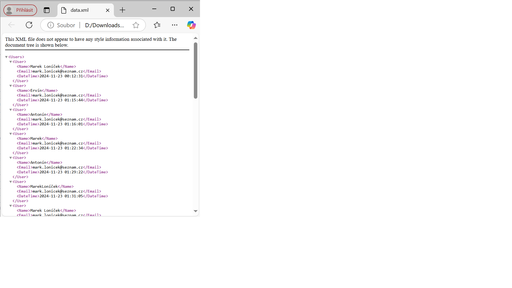
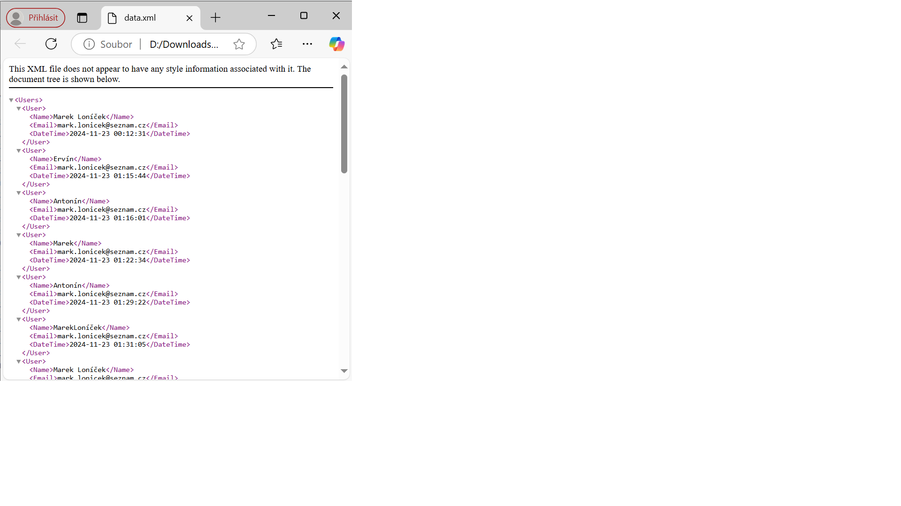

Documentation for the C# Micro Web Server Project.
Welcome!
I have developed a lightweight micro web server in C#, designed to run directly from the console. It is simple, efficient, and allows for immediate testing and data storage.
Table of Contents
1. Download
→ Click on the `Code` (green button) in the upper-right corner of the repository.
→ Select `Download ZIP`. Extract the ZIP file on your computer.

2. Setup and Installation
→ Extract the ZIP file on your computer.
→ Locate and run the executable file `sitovka.exe` (confirm any firewall prompts if necessary).

3. How to Use
→ The program will launch a console.
→ Paste the server URL address `http://localhost:8888` into Your favorite web browser - Chrome, Edge, Firefox, Opera, Safari,...
→ All data is automatically stored in the provided CSV and XML files.


 

4. License
© Marek Loníček, 23.11.2024
Application's System Design Architecture - UML Diagrams
This documentation describes the individual components and diagrams used in the C# console application for the micro web server.
1. Use Case Diagram
The Use Case Diagram shows the interactions between the user and the system. In our case, this includes actions the user can perform, such as opening the web browser or saving data into CSV and XML files.

2. Class Diagram
The Class Diagram illustrates the structure of classes, their attributes, methods, and relationships between them. This diagram displays classes like `Program`, `HttpListener`, `File`, and their cooperation in processing HTTP requests.

3. Sequence Diagram
The Sequence Diagram shows how interactions between objects occur over time. An example includes processing GET and POST requests, including loading data and generating a response for the user.

4. Activity Diagram
The Activity Diagram shows the steps of a process performed in a specific sequence. For example, it illustrates how the system responds to a browser query or processes different server requests.
5. State Diagram
The State Diagram shows the various states of an object in the application and transitions between these states. For the server, it displays transitions between states like "Configured", "Processing Requests", and "Shut Down".